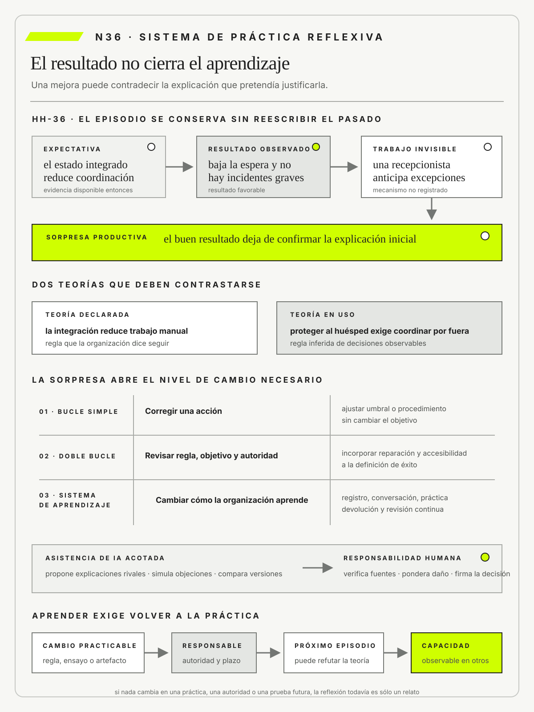

Donald Schön
The Reflective PractitionerBasic Books · 1983
Desarrolla una teoría de práctica reflexiva para situaciones profesionales indeterminadas.

Un resultado favorable no valida la explicación que condujo a él ni demuestra aprendizaje.
Práctica reflexiva: aprender de decisiones, errores, sorpresas y asistencia de IA
Ruta de lectura: problema, distinciones, decisiones, prueba, transferencia y preparación.

Nota. SIN NUM. identifica aparatos de orientación y referencia.
Seis referentes y las obras principales utilizadas para construir N36.
Desarrolla una teoría de práctica reflexiva para situaciones profesionales indeterminadas.

Conecta modelos mentales, aprendizaje en equipo y pensamiento sistémico con una práctica organizacional sostenida.

Vincula experiencia, indagación y reflexión sin asumir que toda vivencia produce aprendizaje.

Modela el aprendizaje experiencial como transformación entre experiencia, observación y experimentación.

Estudia seguridad psicológica, voz, error y aprendizaje en equipos.

Vincula reflexión, diálogo y acción transformadora sin reducir el aprendizaje a recibir respuestas.
N36 no resume estas fuentes ni las convierte en receta. Las pone en tensión para construir juicio profesional.
¿Cómo convertir la experiencia de intervenir en una capacidad profesional que aprende sin reescribir el pasado ni delegar la reflexión?

Aprender exige que una sorpresa modifique una regla, una autoridad o una capacidad, y que una prueba posterior lo confirme.
Una organización social implementa un sistema de turnos para mejorar el acceso a asesoramiento jurídico. Después de tres meses, la espera media baja, aumentan las consultas atendidas y disminuyen las ausencias. El equipo celebra. La plataforma parece haber confirmado su idea inicial: las personas faltaban porque el circuito anterior era lento y confuso.
Durante una revisión de campo, una estudiante pregunta quién llama a quienes no confirman por internet. La responsable del proyecto responde: «Nadie debería hacerlo, el nuevo sistema envía recordatorios automáticos». Una coordinadora escucha la conversación, muestra su cuaderno y aclara: «Yo reviso los turnos dudosos todas las mañanas». Llama a quienes tuvieron dificultades y reorganiza cupos antes de que comience la atención.
La mejora es real. La explicación, en cambio, ya no parece suficiente. Tal vez la nueva interfaz redujo parte de la fricción. Tal vez los recordatorios ayudaron. También es posible que la coordinación manual haya evitado ausencias que el tablero luego contó como éxitos del sistema. Las tres explicaciones pueden ser parcialmente verdaderas, pero conducen a decisiones distintas.
Si la interfaz produjo el cambio, conviene seguir invirtiendo en producto. Si el recordatorio fue decisivo, habrá que mejorar mensajes y canales. Si la coordinadora sostuvo el acceso, la organización deberá reconocer esa capacidad, distribuirla y evitar que dependa de una sola persona. Declarar éxito sin distinguir los mecanismos podría eliminar justamente el trabajo que hizo posible el resultado.
El equipo vuelve al episodio. No pregunta primero quién tuvo razón. Reconstruye qué información estaba disponible, qué esperaba cada rol, qué decisión tomó y qué ocurrió después. La línea temporal muestra que el tablero clasificaba como confirmadas varias citas salvadas por teléfono. El sistema decía autoservicio. La práctica real combinaba tecnología con intervención humana.
Esta diferencia introduce el problema de N36. Aprender de la experiencia no significa recordar que algo salió bien o mal. Significa poder explicar qué se esperaba, qué sorprendió, qué regla orientó la acción y qué debe cambiar antes del próximo caso. Un buen resultado puede esconder una explicación incorrecta. Un mal resultado puede contener una hipótesis valiosa que falló por una condición inesperada.
La organización decide no automatizar de inmediato las llamadas ni dejarlas como esfuerzo informal. Define en qué casos la asistencia agrega valor, asigna tiempo y autoridad, forma a otros turnos y conserva una vía segura cuando la persona experta no está. Durante el ciclo siguiente observará si el servicio mantiene el acceso sin depender del cuaderno privado de la coordinadora.
La revisión conserva dos explicaciones rivales. Si la interfaz explica la mayor parte de la mejora, los resultados deberían sostenerse cuando el apoyo se distribuya. Si la coordinación fue central, los episodios sin llamada volverán a concentrar ausencias. El equipo no necesita elegir una historia definitiva hoy. Necesita diseñar una próxima observación capaz de cambiar su decisión.
N36 cierra el curso con esa disciplina. La experiencia se vuelve aprendizaje cuando modifica una capacidad y deja preparada una nueva prueba. La inteligencia artificial puede comparar versiones, sugerir hipótesis o señalar contradicciones. No puede decidir qué evidencia merece confianza, qué costo es aceptable ni quién debe responder por la consecuencia.
Que algo haya salido bien no demuestra que se entienda por qué salió bien. Aprender de una intervención exige volver a lo ocurrido: qué se sabía, qué se eligió, qué sorprendió y qué pasó después. El aprendizaje se vuelve real cuando cambia la manera de actuar o decidir y cuando ese cambio puede probarse en otra situación. La inteligencia artificial puede ayudar a encontrar preguntas y comparar relatos, pero las personas deben comprobar los hechos, elegir un camino y hacerse cargo del resultado.
Un resultado favorable sólo se convierte en aprendizaje profesional cuando una sorpresa contrasta teorías rivales, modifica una práctica, una regla, una autoridad o el sistema de aprendizaje y vuelve a una prueba observable.

N35 terminó con una expectativa concreta: otras personas debían poder actuar sin depender del equipo original. N36 mira qué pasa cuando llega ese momento. El último paso del curso no agrega otro documento ni otra plantilla. Enseña a revisar una decisión cuando la realidad confirma, contradice o complica lo que creíamos.
La lectura avanza en tres pasos. Primero vuelve sobre una experiencia sin maquillarla. Después muestra cómo una revisión puede cambiar algo concreto. Por último reúne práctica, memoria y ayuda de IA para que aprender no dependa de una única conversación ni de una persona excepcional.
En Hotel Horizonte, Lucía Ferreyra recibe una señal extraña. El sistema indica que una habitación accesible está liberada, pero la cerradura no responde. El huésped está frente al mostrador y la solución prevista ya no alcanza. «Limpia no significa utilizable», dice Lucía. Podría insistir con el procedimiento o llamar a Federico Müller para que decida. En cambio, separa dos estados que la pantalla presentaba como uno.
Lucía consulta a Mariela Benítez, limita la promesa y ofrece una alternativa reversible. Antes de continuar deja una marca breve: qué señal contradijo al tablero, qué decisión tomó y qué daño intentó evitar. No redacta un informe mientras espera el huésped. Conserva lo mínimo necesario para que la corrección no desaparezca después.
Donald Schön llamó reflexión en la acción a este pensamiento que ocurre mientras todavía estamos actuando. No significa hacer cualquier cosa ni olvidar las reglas. Significa advertir que la regla no alcanza para el caso presente, ensayar una explicación y elegir un paso prudente. La persona profesional no abandona el método. Reconoce cuándo necesita adaptarlo.
La diferencia con una reacción impulsiva está en esa pausa. Lucía se pregunta qué cambió, qué daño puede crecer, qué puede decidir y qué opción permite volver atrás. Aunque la respuesta provisoria funcione, después habrá que entender por qué fue necesaria. Resolver un caso no demuestra que la nueva idea sea correcta ni que sirva para todos los casos.
Para pensar así no alcanza con pedirle a alguien que preste más atención. El turno necesita tiempo para detenerse, permiso para frenar una promesa y un lugar donde registrar la excepción. También necesita saber que una duda razonable no será castigada. Si todo depende de que alguien se arriesgue y salve el día, la organización no aprendió.
Al día siguiente, el equipo revisa el episodio. Ahora conoce el desenlace, pero intenta no usarlo para reescribir el pasado. Coloca en una mesa la reserva, el estado de limpieza, el registro de la cerradura, el mensaje al huésped y la nota de Lucía. Cada pieza recibe una hora. Luego cada rol explica qué sabía en ese momento, no qué entiende ahora.
Federico observa que el evento técnico llegó tarde. Mariela recuerda que la habitación estaba limpia, pero todavía no había comprobado el acceso. «Nosotros dijimos disponible», señala Camila Duarte al mostrar la promesa comercial. Ricardo Sosa responde: «La operación trató liberada y asignable como sinónimos». Las versiones no coinciden y esa diferencia es información, no un obstáculo que deba borrarse.
Schön llamó reflexión sobre la acción a este regreso posterior sobre una experiencia. Jennifer Moon ayuda a diferenciarlo de una simple descripción. Una cronología cuenta qué pasó. Una reflexión agrega qué esperábamos, cómo entendimos las señales, qué elegimos y qué efecto tuvo esa elección. Luego pregunta qué idea dejó de servir y cómo podríamos comprobar una explicación distinta.
La revisión no obliga a elegir una única causa. El evento pudo llegar tarde, el estado pudo ser ambiguo y la coordinación de Lucía pudo compensar ambos problemas. Para cada explicación, el equipo anota qué dato la apoya, qué dato la pone en duda y qué debería mirar la próxima vez. Así entiende mejor lo ocurrido sin fingir una certeza que todavía no tiene.
Volver después no significa evitar responsabilidades. Primero hay que entender por qué una acción pareció razonable en ese momento. Luego se decide quién repara, quién cambia el diseño y quién responde por el compromiso. Si la reunión empieza buscando culpables, las personas se defienden y dejan de contar lo que saben. Entender cómo se produjo el problema permite repartir mejor las tareas y las responsabilidades.
Hay una sorpresa cuando ocurre algo importante que no esperábamos. No toda diferencia exige una investigación larga. Algunas sólo piden corregir un dato. Otras abren una pregunta decisiva. La habitación estaba limpia, el tablero decía disponible y, sin embargo, el huésped no podía usarla. ¿Qué significaba entonces estar disponible?
John Dewey explicó que vivir una experiencia no alcanza para aprender de ella. Incluso podemos salir más convencidos de una idea equivocada si sólo recordamos el resultado. La sorpresa corta esa comodidad. Nos obliga a buscar en qué momento lo que pensábamos dejó de explicar lo que estaba pasando.
En el hotel, una corrección manual explica parte de un éxito atribuido a la integración. Si el equipo observa únicamente el tiempo medio, acreditará al software una capacidad que todavía depende de Lucía y Mariela. La sorpresa no invalida todo el sistema. Muestra una frontera que no estaba bien representada.
Para decidir cuánto investigar, el equipo usa cuatro preguntas. ¿Puede volver a pasar? ¿Qué daño causaría? ¿Sabemos repararlo? ¿Entenderlo cambiaría una decisión importante? Un hecho raro merece atención si puede afectar gravemente a alguien. Otro más frecuente puede esperar cuando ya sabemos qué lo produce y cómo resolverlo.
Una sorpresa útil se cuenta con precisión. No alcanza con decir que algo salió raro. Hay que decir qué se esperaba, qué ocurrió, a quién afectó y qué idea quedó en duda. Esa forma de contarla evita dos atajos: culpar a una persona por toda diferencia o llamar excepción a cualquier dato que incomoda la primera idea.
El protocolo de Hotel Horizonte afirma que cualquier turno puede detener una promesa cuando falta una condición crítica. Los registros muestran otra cosa. Los turnos sólo detienen cuando Federico está disponible. Cuando no está, intentan resolver sin escalar para no aumentar el tiempo de atención.
La regla escrita muestra lo que la organización dice que hace. Las decisiones repetidas muestran lo que hace de verdad. Chris Argyris y Donald Schön llamaron a esas dos caras teoría declarada y teoría en uso. La distinción permite mirar la distancia entre el discurso y la práctica sin convertirla de inmediato en una acusación.
Esa distancia no prueba que alguien mienta. Puede indicar que faltan permisos, que se premia lo contrario de lo que dice la norma, que existe miedo a una sanción o que la regla dejó afuera un saber práctico. Antes de ofrecer otra capacitación, el equipo mira qué pasa cuando alguien detiene el servicio, quién recibe el aviso y qué costo paga el turno.
Si la persona sabe qué debería hacer, pero la interfaz no ofrece el permiso, el problema no es falta de formación. Si el permiso existe y detener empeora su evaluación, repetir la política tampoco servirá. Cada causa pide un cambio distinto. Así, una acusación vaga se convierte en una decisión concreta sobre roles, herramientas o premios.
La comparación termina con una elección. La organización puede dar condiciones reales para cumplir la regla escrita o puede cambiar una regla que nadie logra aplicar. Si conserva las dos y no elige, el documento dirá una cosa y el trabajo diario seguirá otra. El próximo caso debe mostrar qué regla guía ahora la acción.
El hotel recibe demasiadas alertas de discrepancia. Algunas son críticas y otras no, por eso el turno comienza a ignorarlas. «Probemos otro umbral durante una semana», propone Federico. El objetivo permanece, detectar a tiempo los estados incompatibles, pero cambia el modo de alcanzarlo.


Argyris y Schön llamaron aprendizaje de bucle simple a la corrección de una acción dentro de objetivos y reglas que se mantienen estables. Es una forma necesaria de aprender. Permite afinar un proceso, corregir un error o reducir ruido sin reabrir todo el sistema en cada incidente.
El ajuste se mira con dos medidas. La primera cuenta las alertas innecesarias. La segunda controla los casos que podrían quedar sin detectar. Si baja el ruido y aumentan las omisiones, no hubo una mejora. La prueba dura una semana, tiene una persona a cargo y puede deshacerse si aparece una señal de daño.
Esta corrección tiene un límite. Sirve mientras la meta y la regla sigan teniendo sentido. Si ningún umbral reduce el ruido sin perder casos de accesibilidad, el problema ya no está en el número elegido. Hay que revisar qué llamamos éxito y quién puede decidir cuando aparecen dos señales que no coinciden.
Para el estudiante, la pregunta práctica es directa: ¿estoy corrigiendo la manera de hacer algo o estoy descubriendo que la meta misma quedó mal formulada? No toda mejora pequeña es superficial. Tampoco toda dificultad exige cambiar la estrategia. El juicio consiste en reconocer cuándo el marco todavía ayuda y cuándo comienza a ocultar el problema.
El tablero del hotel premia velocidad. Dos casos reciben la misma calificación si se resuelven en cinco minutos, aunque uno deje al huésped sin una habitación accesible y el otro cierre con una reparación aceptada. Ajustar el umbral no corrige esa definición de éxito.
Elena Acosta reúne a quienes deben cambiar la regla. La nueva meta combina tiempo, posibilidad de uso, reparación y carga de trabajo. También cambia quién puede decidir: Recepción puede detener una promesa ante señales definidas y debe dejar la información necesaria para que otra persona continúe. Comercial ya no ofrece algo que Operaciones no puede sostener.
Revisar la idea de éxito, la regla o quién puede decidir se llama aprendizaje de doble bucle. El nombre importa menos que la diferencia. En el bucle simple preguntamos cómo cumplir mejor una regla. En el doble preguntamos si esa regla nos lleva al resultado que de verdad queremos cuidar.
Esto no significa discutir todo desde cero. El equipo debe decir qué idea abandona, qué datos justifican el cambio, qué obligación mantiene y qué riesgo acepta. Si sólo cambia las palabras, pero sigue premiando la rapidez por encima de todo, la norma escrita será nueva y la práctica seguirá siendo la misma.
El equipo prueba la nueva definición con dos episodios de igual duración y distinta reparación. Si el tablero y las decisiones distinguen ambos casos, el cambio comienza a operar. Si las personas siguen ocultando demoras para proteger el indicador, todavía no hubo aprendizaje organizacional. Hubo una reunión y un documento nuevo.
Los equipos suelen registrar tareas, fechas y entregas. Eso no basta para aprender de una decisión. También hace falta recordar qué opciones existían, qué datos estaban disponibles, cuánta confianza tenía el equipo y qué señal lo obligaría a cambiar de idea.
El diario de decisiones guarda esa memoria. No registra cada movimiento ni sirve para vigilar personas. Se usa en decisiones importantes, inciertas o difíciles de deshacer. La entrada se escribe antes de conocer el resultado y después recibe notas nuevas. La versión original no se modifica para hacer parecer que todos sabían lo que iba a ocurrir.
En HH-36, el equipo registra la decisión de distribuir la coordinación que antes realizaba Mariela. Anota población, condición de inicio, personas autorizadas, riesgos y señales de detención. También conserva una alternativa descartada: automatizar todas las llamadas. La rechaza porque todavía no sabe qué parte del trabajo requiere interpretación situada.
Cuando aparecen nuevos datos, el diario ayuda a separar tres casos. La decisión pudo ser razonable y terminar mal. Pudo ignorar una señal que ya existía. También pudo acertar por una ayuda o una condición que nadie había visto. Esas tres situaciones no enseñan lo mismo y no deberían llevar a la misma respuesta.
Un diario útil es breve y fácil de encontrar. Incluye fecha, responsables, hechos, interpretación, alternativa, grado de confianza y próxima revisión. Protege información sensible y permite que otra persona entienda cómo se decidió. Si se completa por obligación y nadie vuelve a leerlo, se convierte en un archivo para cubrirse, no en una ayuda para aprender.
Durante el segundo turno aparece una nueva discrepancia. Un mensaje automático confirma una condición que la habitación todavía no cumple. Nadie resulta dañado porque Lucía detecta la diferencia. El equipo decide revisar el episodio antes de que la ausencia de daño lo vuelva invisible.
Una revisión posterior comienza con la distancia entre lo esperado y lo que ocurrió. Escucha a quienes vieron partes distintas del caso, busca cómo se produjo el problema y termina con acciones y pruebas. No se limita a ordenar horarios ni a escribir consejos generales. Tampoco borra la obligación de responder.
Amy Edmondson estudió qué necesitan los equipos para hablar de errores y dudas. Llamó seguridad psicológica a la posibilidad de plantear una preocupación sin recibir un castigo personal por hacerlo. No significa trabajar sin exigencia. Después de escuchar, la organización todavía debe reparar y decidir quién cambia qué.
En la revisión, Lucía explica por qué aceptó inicialmente el mensaje y Federico muestra cómo se generó. Mariela aporta la secuencia real de disponibilidad. Camila reconoce: «Prometimos como si reserva confirmada y condición garantizada fueran lo mismo». Elena pregunta «¿Qué hizo razonable esa decisión?» y luego asigna cambios concretos.
El resultado no puede quedar en «comunicar mejor». Comercial cambia la promesa, Tecnología separa los estados y Operaciones prepara una salida segura. En el turno siguiente, una persona que no estuvo en la reunión debe poder detectar la diferencia y repararla. Si no puede hacerlo, la revisión produjo buenas intenciones, no una mejora compartida.
Leer un caso y comprender la respuesta no demuestra que una persona pueda actuar bajo presión. Para convertir el aprendizaje en capacidad, el equipo practica una decisión concreta. No ensaya mejorar la atención en general. Ensaya reconocer dos señales incompatibles, detener una promesa y construir una alternativa reversible.
Este modo de entrenar se llama práctica deliberada. Tiene una meta que puede observarse, una dificultad adecuada, una devolución rápida y otra oportunidad para intentar. Los estudios de K. Anders Ericsson, Ralf Krampe y Clemens Tesch-Römer ayudan a distinguirla de repetir por repetir. Hacer muchas veces una tarea conocida puede fijar un hábito sin enseñar algo nuevo.
La primera ronda presenta una habitación limpia con cerradura fuera de línea. La segunda conserva el problema y agrega alta demanda. La tercera retira a la persona experta. Después de cada intento, la devolución señala qué evidencia se usó, en qué momento cambió la decisión y qué consecuencia quedó sin atender. La siguiente ronda modifica una sola variable para saber si la mejora puede transferirse.
David Kolb describió un recorrido que va de una experiencia concreta a su observación, luego a una idea y finalmente a otra prueba. Ese recorrido ayuda a ordenar el ejercicio, pero no garantiza que alguien aprenda. Schön agrega la necesidad de revisar cómo entendimos el problema cuando algo nos sorprende. Étienne Wenger recuerda que aprender también exige participar con otros y compartir maneras de actuar.
El entrenamiento debe detenerse cuando el mismo error nace de algo que la persona no puede cambiar. Si todos saben cuándo suspender, pero la pantalla no les da permiso, hacer más simulaciones culpa a las personas por un problema del diseño. Primero se corrige la herramienta. Después se vuelve a practicar.
Al final de una materia o un proyecto es tentador reunir las mejores entregas. Una colección impecable puede mostrar producción, pero esconder el aprendizaje. Para comprender cómo cambió el juicio hacen falta versiones, dudas, objeciones, decisiones descartadas y consecuencias.
El portafolio de aprendizaje reúne las piezas que muestran ese cambio. No guarda todo. En Hotel Horizonte incluye la idea inicial, el episodio que la puso en duda, la decisión revisada, una devolución y el resultado de la prueba siguiente.
Lo central es comparar versiones. La primera no se trata como un error sólo porque después haya cambiado. Hay que explicar por qué parecía razonable con los datos disponibles. La segunda muestra qué nueva señal hizo cambiar de idea. Una nota final cuenta qué aprendió a hacer el equipo y qué duda sigue abierta.
El portafolio también conserva un intento fallido cuando permitió aprender. Si sólo muestra éxitos, premia la imagen profesional. Si acumula todos los archivos, vuelve imposible localizar el cambio. La selección debe permitir que una persona externa cuestione la interpretación y encuentre la evidencia original.
Cuando el trabajo es colectivo, cada integrante identifica su contribución sin convertir autoría en competencia aislada. También existe una política de retención. No toda información merece conservarse y algunos datos deben eliminarse o anonimizarse. Recordar con responsabilidad incluye decidir qué no guardar.
El equipo ya escribió su explicación del episodio cuando consulta una herramienta de inteligencia artificial. Le pide tres mecanismos rivales y, para cada uno, una observación que lo apoyaría y otra que lo debilitaría. La salida sugiere que el cambio pudo depender del contrato, de la coordinación manual o de una variación de demanda.
Lucía contrasta los episodios. Federico revisa trazas. Ricardo analiza la capacidad del turno. Una de las hipótesis menciona un dato que no existe y se descarta. Otra ayuda a localizar una condición olvidada. La herramienta amplió la búsqueda, pero no convirtió una frase plausible en evidencia.
Usar IA como interlocutora crítica significa darle una tarea pequeña que podamos revisar. Puede comparar versiones, plantear objeciones o señalar preguntas que faltan. La persona sigue eligiendo el problema, protege los datos, comprueba los hechos, considera los posibles daños y firma la decisión.
El protocolo mantiene una vía sin IA. Otra persona revisa el expediente sin conocer la salida automatizada. Si ambas rutas encuentran el mismo punto ciego con evidencia independiente, la herramienta pudo aportar contraste. Si sólo reformula la teoría inicial con más fluidez, no agregó aprendizaje.
El marco de gestión de riesgos de IA de NIST, cuya autora principal es Elham Tabassi, organiza cuatro tareas: gobernar, comprender el contexto, medir y actuar sobre los riesgos. El marco de competencias de UNESCO insiste en mantener el juicio humano, la ética y la comprensión técnica. Ambos ayudan a poner límites al uso de la herramienta, pero no demuestran que la reflexión haya sido buena. Todavía hace falta volver al caso y comprobar qué ocurrió.
En 2026, esta diferencia es especialmente importante. La IA puede estar incluida dentro de una herramienta cotidiana y actuar sin una consulta separada. Un resumen automático, una sugerencia en un tablero o una categoría propuesta puede orientar la mirada antes de que el equipo lo advierta. Ya no alcanza con preguntar si se usó IA. También importa cuándo intervino, qué opciones dejó fuera y quién podía discutir su propuesta.
El diario agrega tres datos: en qué parte ayudó la IA, qué pudo revisar la persona y qué habría pasado sin esa sugerencia. Si el equipo no puede reconstruir esos puntos, no debería atribuirle la mejora ni usar su respuesta como único fundamento. Incluso una herramienta bien documentada puede volverse opaca si nadie recuerda cómo una sugerencia influyó en lo que se decidió y en lo que ocurrió después.
También existe un límite para aprender. Pedir a la IA que critique un texto después de que el estudiante escribió su argumento puede abrir otra mirada. Pedirle desde el comienzo la explicación, las objeciones y la síntesis puede quitar justamente el trabajo que se intenta aprender. Ya no vemos cómo cambió el pensamiento del estudiante. Por eso el orden importa: primero una posición propia con datos, luego la consulta, después la comprobación y al final una decisión asumida.
Esta propuesta de N36 no es una regla idéntica para cualquier herramienta. Cuanto mayor sea el posible efecto, mayor deberá ser el registro. Una ayuda menor de redacción no necesita el mismo control que una recomendación capaz de cambiar el acceso a un servicio, repartir recursos o detener una operación. Hay que guardar lo suficiente para revisar una decisión sin transformar cada acción en un trámite.
Una buena conversación puede cambiar a quienes participaron y desaparecer al día siguiente. Para que eso no ocurra, la organización conecta cuatro tareas: guardar el caso, entenderlo, decidir un cambio y practicarlo. Cada hallazgo tiene una persona a cargo, una fecha y una señal que permitirá saber si se completó.
En Hotel Horizonte, el turno registra una sorpresa. La revisión busca qué la produjo. La dirección asigna recursos y permisos. Otro turno prueba si puede actuar. El resultado vuelve al tablero y al diario. Cuando ese recorrido se repite, ya no hay sólo personas que aprenden: existe un sistema de aprendizaje profesional.
Peter Senge mostró que los equipos también necesitan revisar las ideas con las que interpretan su trabajo. Paulo Freire unió reflexión, diálogo y acción para transformar una situación junto con otros. Sus perspectivas son distintas, pero coinciden en algo importante: una conclusión guardada por una sola persona no alcanza. Lo aprendido debe poder discutirse y ponerse en práctica con otros.
El sistema necesita una frecuencia regular y también una vía urgente, porque algunos daños no pueden esperar la reunión mensual. Además, hay que decidir quién participa. Quienes resuelven las excepciones suelen aportar testimonios y trabajo extra, mientras otros conservan el poder de decisión. Dar tiempo, reconocimiento y voz real a esas personas también forma parte del cambio.
Conversar indefinidamente tampoco es aprender. Cada revisión termina con una decisión provisional o con una deuda explícita. Si la evidencia no alcanza, se conserva el desacuerdo y se diseña una prueba. El sistema se evalúa por cambios observables y por problemas detectados antes del daño, no por cantidad de reuniones o documentos.
HH-36 comienza en el primer turno después de la entrega de HH-35. El ingreso es más rápido y no ocurre ningún incidente grave. Camila cree que la solución quedó confirmada. Federico piensa que el nuevo contrato explica la mejora. Lucía advierte que una recepcionista vio dos excepciones antes de tiempo y coordinó por teléfono con Mariela. Las tres lecturas parecen posibles.

En la reunión de las nueve, Elena escribe las tres explicaciones en el pizarrón y pregunta: «¿Qué decisión tomaríamos si cada una fuera verdadera?». Camila ampliaría la promesa. Federico consolidaría el contrato. Lucía distribuiría la capacidad de anticipación. Ricardo observa que hacer las tres cosas sin distinguir mecanismos aumentaría costo y podría ocultar el problema.
El equipo reconstruye dos llegadas. En la primera, el estado integrado evita una consulta y reduce tiempo. En la segunda, la habitación figura disponible, pero Mariela todavía no confirmó una condición de accesibilidad. La recepcionista detecta la diferencia porque conoce el turno y llama antes de que llegue el huésped. El tablero cuenta ambos episodios como éxito.
La regla escrita decía que el estado compartido reduciría las llamadas. La práctica premiaba a quien salía del sistema para proteger al huésped. Elena evita presentar a esa persona como culpable o heroína. Pregunta qué debe aprender a hacer todo el turno, qué trabajo humano sigue siendo valioso y qué señal necesita la pantalla para mostrarlo.
La primera decisión corrige la acción. Federico agrega una marca que separa disponibilidad técnica de confirmación operativa. Este es el bucle simple. La segunda cambia la regla. El hotel deja de medir sólo rapidez y también mira si la habitación puede usarse, si hubo reparación y cuánto trabajo manual hizo falta. Este es el doble bucle. Recepción obtiene permiso para detener una promesa cuando falta una condición crítica.
El diario guarda las dos decisiones y dice cuándo habrá que revisarlas. La herramienta de IA compara versiones y propone ideas, pero cada una se controla con los registros y con quienes estuvieron allí. Una sugerencia atribuye la mejora a una menor demanda. Ricardo revisa el volumen y la descarta. Otra pregunta si el contrato aclaró algunos estados. Federico encuentra datos a favor, aunque no suficientes, y deja la explicación abierta.
El equipo habrá aprendido cuando otro turno pueda ver la contradicción, detener la promesa y reparar sin depender de Lucía ni de Mariela. El hotel ensaya tres situaciones y observa cómo decide cada persona. Si alguien falla porque la pantalla no le da permiso, se corrige la interfaz antes de repetir el entrenamiento.
HH-36 no cierra con una causa única. Conserva dos mecanismos que pudieron contribuir y define cómo observarlos. También reconoce una deuda profesional. Mariela sostuvo durante semanas una coordinación no registrada que mejoró el servicio y aumentó su carga. Formalizar esa práctica exige tiempo, autoridad y reconocimiento. Automatizarla sin comprenderla volvería a ocultar el trabajo.
La revisión se hará después de tres turnos o ante la primera sorpresa importante. El aprendizaje será compartido si el resultado deja de depender de una persona, si el equipo puede contar qué cambió y si sigue dispuesto a revisar la regla cuando aparezcan nuevos datos.
HH-36 transforma una experiencia en una conversación que otra persona puede seguir. No gana el relato más elegante. Las doce preguntas ayudan a comparar lo esperado con lo ocurrido y a decidir qué probar después.
No hace falta responder todo con la misma extensión. Lo importante es que las respuestas se conecten. La conversación puede comenzar por la sorpresa y volver a lo que se esperaba. También puede descubrir que faltan datos y terminar con una pregunta para investigar, no con un cambio inmediato.
La ficha puede enlazar trabajos de N01 a N35 cuando ayuden a entender el caso: cómo se formuló el problema, qué datos se usaron, qué modelo se construyó, qué camino se eligió y cómo se operó. No exige llenar todos los casilleros. Exige explicar una ausencia cuando esa falta impide seguir la historia.
Una persona recién egresada comienza a trabajar en el área de servicios estudiantiles de una universidad pública. En su primera semana recibe un pedido: usar IA para reducir consultas repetidas antes de la inscripción. Nadie definió a qué estudiantes alcanza el cambio ni quién decide cuando dos fuentes académicas se contradicen.
El equipo reúne bajo la etiqueta «repetidas» preguntas muy diferentes. Algunas consultan una fecha publicada. Otras plantean equivalencias, accesibilidad o excepciones reglamentarias. La persona egresada no comienza por elegir una herramienta. Pregunta: «¿Qué orientación podemos ofrecer sin convertir una respuesta general en una decisión académica?».
El primer mapa reúne estudiantes, personal de atención, departamentos académicos, accesibilidad, tecnología y la oficina que aprueba calendarios. El equipo acuerda tres límites. El asistente busca información publicada y fechada, pero no decide equivalencias. Si encuentra dos fuentes que no coinciden, se detiene. El estudiante puede pedir ayuda humana sin contar todo de nuevo.
Antes del piloto, el equipo registra su expectativa. Espera que las respuestas con fuente reduzcan consultas simples y liberen tiempo para casos complejos. También escribe una condición de detención. Si la herramienta presenta como vigente una fecha contradictoria, el piloto se suspende.
Una semana después, el tiempo medio baja y no aparece ninguna orientación incorrecta. Parece un éxito. En la revisión surge una sorpresa: dos trabajadoras compararon a mano cada respuesta con un calendario paralelo. Esa tarea invisible evitó errores, pero no podrá sostenerse cuando comience la inscripción.
El equipo formula dos explicaciones. El enlace visible pudo mejorar la autonomía estudiantil. El control manual pudo evitar errores que el sistema todavía produciría. Una herramienta de IA propone una tercera posibilidad, menor demanda, pero los datos no la sostienen. La próxima prueba registra correcciones y pregunta a estudiantes si reconocen fuente, vigencia y vía de escalamiento.
El hallazgo produce dos cambios. Primero, el buscador pasa a priorizar documentos vigentes. Después, el equipo deja de mirar sólo cuántos correos evita. También controla si la orientación es correcta, si el estudiante la entiende, cuánto trabajo humano requiere y cómo se repara un error. La oficina académica decide qué fuente está vigente. Servicios Estudiantiles puede detener la respuesta y Accesibilidad prueba el recorrido.
Tres semanas más tarde, otro turno encuentra una contradicción, detiene la respuesta y pasa el caso completo a una persona autorizada. No necesita llamar a quien diseñó el piloto. Recién entonces hay una señal de que el equipo aprendió. La universidad no copió las pantallas del hotel. Copió una manera de preguntar, decidir, observar y revisar.
Al cerrar un proyecto, el equipo escribe tres frases: comunicar más, probar antes y mejorar coordinación. Ninguna identifica un episodio, una decisión o una consecuencia. Podrían aparecer después de cualquier proyecto.
La lista produce acuerdo porque evita discutir lo importante. No dice quién hará algo distinto, qué dato justifica el cambio ni cómo sabremos si funcionó. En el próximo proyecto, probablemente aparecerán las mismas frases.
Una lección profesional tiene que verse en la acción. Por ejemplo: Recepción puede detener una promesa cuando dos estados no coinciden, guarda el contexto y prueba la reparación en el turno siguiente. Esta frase permite discutir, practicar y comprobar algo. «Mejorar la coordinación» no.
Para la prueba final se elige una decisión del curso cuyo resultado haya sido mejor o peor de lo esperado. Primero se reconstruye qué se sabía, qué se eligió y qué regla guio la acción. Después se busca si hubo trabajo manual, azar u otra condición que explique la sorpresa.
El equipo propone otra explicación, cambia una práctica concreta y elige una situación futura para probarla. La IA puede plantear objeciones o comparar versiones, pero cada afirmación debe revisarse con los registros y con la experiencia de quienes estuvieron allí.
N36 se completa cuando alguien aprende a hacer algo que antes no podía hacer y otra situación permite observarlo. Una mejora debe aparecer en más de un caso o presentarse con honestidad como un hallazgo todavía provisorio. Si el cambio necesita algo que aún no existe, se anota como deuda y no como logro.
Antes de la prueba, el equipo escribe qué espera, qué teme y qué señal lo haría cambiar de idea. Después escucha a las personas afectadas y compara posibles causas. Siempre deja una nueva fecha de revisión, porque una forma de actuar que hoy funciona puede fallar cuando cambian las personas, la tecnología o los permisos.
Las fuentes aparecen en el recorrido cuando ayudan a entender una decisión. Schön distingue el pensamiento durante la acción de la revisión posterior. Argyris y Schön separan corregir una acción de revisar la regla. Dewey muestra por qué una experiencia necesita ser investigada. Kolb ayuda a pasar de una experiencia a una idea y de esa idea a otra prueba.
Moon separa una cronología de una reflexión profunda. Edmondson explica qué necesita un equipo para hablar de errores y dudas. Wenger muestra que aprender también ocurre al participar con otros. Ericsson, Krampe y Tesch-Römer explican cómo practicar una dificultad concreta con una devolución útil.
Senge conecta las ideas con las que miramos el trabajo, el aprendizaje de equipo y el pensamiento sistémico. Freire une reflexión, diálogo y acción transformadora. Mezirow estudia cómo revisamos formas profundas de interpretar la realidad. NIST y UNESCO ponen límites al uso de IA y mantienen el juicio humano, la ética y la comprensión técnica.
Estas tradiciones no forman una receta única. Cada una ayuda a mirar una parte distinta del problema. N36 presenta los nombres después de los casos para que la teoría profundice una idea que el lector ya pudo comprender.

Una revisión también puede usarse para justificar lo que ya se decidió.
Quedarse con el resultado. Algo puede salir bien por suerte, por trabajo invisible o por una ayuda que no volverá a estar. También puede salir mal aunque la idea fuera razonable. El resultado no explica por sí solo qué lo produjo.
Reescribir el pasado. Cuando ya conocemos el final, todo parece más claro. Cambiar el registro original borra las dudas reales del momento. La revisión conserva lo que se sabía y agrega lo aprendido después sin retocar la historia.
Ajustar sin revisar la meta. Una corrección puede mejorar un número y empeorar la experiencia de las personas. El equipo debe preguntarse si intenta cumplir mejor una regla útil o si esa regla necesita cambiar.
Buscar rápidamente a quién culpar. Una persona puede ser responsable y, al mismo tiempo, haber actuado con permisos, premios o pantallas que empujaban hacia esa elección. Entender esas condiciones no borra la responsabilidad. Permite corregir algo más que a una persona.
Practicar sin devolución. Repetir una tarea sin saber qué se intenta mejorar sólo fija hábitos. Hace falta elegir algo concreto, recibir una observación útil y volver a probarlo con una pequeña variación.
Mostrar sólo éxitos. Un portafolio sin dudas ni versiones descartadas cuenta una historia demasiado perfecta. Para mostrar aprendizaje debe dejar ver cómo y por qué alguien cambió de idea.
Delegar la crítica a la IA. Un modelo puede plantear una objeción útil y también inventar razones. Que una respuesta suene bien no la vuelve cierta. Cada aporte se comprueba y la decisión sigue teniendo responsables humanos.
Decir que se aprendió sin cambiar nada. Una reunión, una lección o un documento no bastan. Algo debe cambiar en la forma de trabajar, en una herramienta o en quién puede decidir. Después, otra situación debe mostrar si ese cambio sirvió.

N36 convierte el cierre del curso en una forma de revisar el propio trabajo. La madurez profesional no consiste en tener siempre razón. Consiste en poder contar cómo se decidió con datos incompletos, qué sorprendió y qué se hará distinto la próxima vez.
Para hacerlo, la organización debe dar tiempo para revisar casos, permiso para expresar dudas, acceso a los datos y poder real para cambiar una regla. Sin esas condiciones, se le pide a cada persona que aprenda mientras todo lo demás sigue empujando hacia la conducta anterior.
El aprendizaje se mira en lo que las personas pueden hacer, no en lo que declaran. Una explicación brillante puede no cambiar ninguna acción. Un cambio pequeño puede enseñar mucho si modifica un permiso, una señal o una forma de reparar. Cada hallazgo debe llegar a una acción que pueda observarse y volver a ponerse a prueba.
La persona y la organización tienen que aprender juntas. Alguien puede revisar cómo entendió un caso. La organización debe corregir las reglas, herramientas y premios que repiten el problema. Si cada turno necesita un héroe, capacitar más gente no elimina la dependencia. Si una pantalla no deja claro quién decide, pedir más atención sólo traslada el problema.
Aprender también puede significar dejar de hacer algo. Una solución útil puede fallar cuando cambia el contexto. Guardar fechas, versiones y límites permite revisarla sin negar que antes haya servido. Abandonar una regla con buenas razones puede ser una señal de aprendizaje, no de fracaso.
Una revisión también puede usarse para justificar lo que ya se decidió. La persona con más poder puede imponer su relato y llamar aprendizaje al acuerdo de los demás. Para evitarlo, el equipo conserva los datos, escucha versiones distintas antes de cerrar y deja escrito el desacuerdo cuando todavía no puede resolverlo.
La seguridad psicológica no elimina la exigencia. Las personas necesitan hablar sin sufrir un ataque personal, pero las decisiones y las reparaciones siguen teniendo responsables. Primero se entiende cómo ocurrió algo. Después se acuerda quién debe reparar y qué debe cambiar. Las dos conversaciones son necesarias.
El trabajo de revisar también puede repartirse mal. Quienes resuelven las excepciones suelen explicar una y otra vez tareas que nadie veía, mientras quienes tienen poder mantienen sus rutinas. La organización debe darles tiempo, reconocimiento y participación real en las decisiones. No puede usar la experiencia ajena para aprender sin ofrecer una respuesta concreta.
La IA responde rápido y suele escribir de manera ordenada. Eso puede hacer que una explicación parezca más sólida de lo que es. También puede mezclar hechos que no coinciden o preferir el registro más formal. Un testimonio no pierde valor porque no aparezca en una traza. Si la respuesta confirma demasiado bien la primera idea, conviene buscar una objeción independiente y preguntar quién no fue escuchado.
Por último, nada de lo aprendido vale para siempre. Una forma de trabajar probada con ciertas personas y una tecnología puede fallar cuando esas condiciones cambian. Por eso el cierre deja una fecha y una señal de revisión. No entrega una receta para dejar de pensar.
El curso termina, pero esta manera de trabajar continúa. Ante una situación nueva, la persona puede entender el problema, mostrar en qué datos se apoya, declarar límites, actuar, mirar qué ocurrió y revisar su decisión con otros. La colección no entrega treinta y seis respuestas para copiar. Enseña una forma de aprender mientras se actúa y después de actuar.
Reflexionar no es solamente opinar ni celebrar un resultado. Es comparar lo que esperábamos con lo que ocurrió sin fingir que el final era obvio. Una sorpresa puede mostrar una regla que no alcanza, un trabajo que nadie veía u otra explicación posible.
Aprender puede significar corregir una acción o cambiar la regla con la que medimos el éxito. Para que la mejora no desaparezca, alguien debe registrarla, practicarla y poder decidir. Hotel Horizonte aprende cuando otro turno puede reconocer el problema y repararlo sin depender de la persona experta.
La IA puede abrir preguntas y comparar versiones. No decide qué dato merece confianza, qué riesgo aceptar ni quién responde. N36 cierra con cinco pasos: elegir un caso, reconstruir la decisión, proponer otra explicación, cambiar una forma de actuar y decir dónde podría fallar otra vez.

Reflexión en la acción: pensar y ajustar cómo entendemos un problema mientras todavía estamos actuando.
Reflexión sobre la acción: volver después sobre una experiencia para entender las decisiones y sus efectos.
Sorpresa: diferencia importante entre lo que esperábamos y lo que ocurrió.
Teoría declarada y teoría en uso: diferencia entre la regla declarada y la que muestran las acciones observadas.
Aprendizaje de bucle simple: corrección de una acción sin cambiar la meta ni la regla.
Aprendizaje de doble bucle: revisión de la idea inicial, la meta, la regla o quién puede decidir.
Diario de decisiones: registro breve de la situación, las opciones, los datos, el grado de confianza y la próxima revisión.
Revisión posterior: análisis de un caso ocurrido para entender qué lo produjo y qué conviene cambiar.
Práctica deliberada: ejercicio de algo concreto que se quiere mejorar, con una dificultad adecuada, devolución y otro intento.
Portafolio de aprendizaje: selección de trabajos y versiones que muestra cómo cambió una manera de pensar y actuar.
IA como interlocutora crítica: uso limitado de IA para plantear objeciones o explicaciones que después deben comprobarse.
Sistema de aprendizaje profesional: forma estable de conectar casos, conversaciones, decisiones, práctica y nuevas revisiones.
Para el encuentro, elegir una decisión propia. Anotar qué se esperaba, en qué datos se apoyó la decisión, qué sorprendió y qué otra explicación es posible. Proponer un cambio concreto y una situación futura para probarlo.